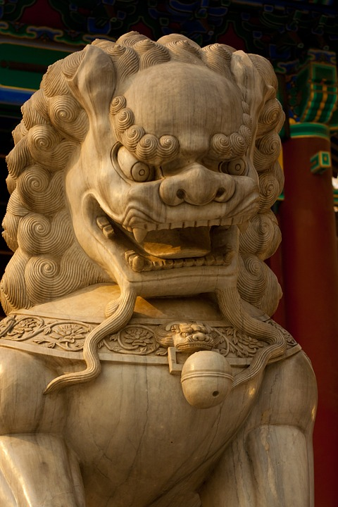

| La leyenda del palacio Potala |
| Los tibetanos dicen que el palacio original fue construido más de mil años antes que la estructura actual, en el año 637. Su constructor fue un rey-dios que unificó el Imperio tibetano, trajo el budismo al Tíbet y creó el alfabeto tibetano. |
Estatua ecuestre de Genghis Khan, Mongolia. |
| Con 40 metros de altura, la estatua de Genghis Khan es la estatua ecuestre más grande del mundo. Su imponente figura de acero domina la estepa de Mongolia, un paisaje verde e infinito. Está construida junto al lugar en el que, según cuenta la leyenda, el joven emperador encontró el látigo con el que consiguió reunir a los nómadas en un solo y temible ejército que llegaría a extenderse por los cuatro puntos cardinales, atravesando la legendaria Gran Muralla China. |
Buda del Templo de la Primavera, China. |
| En Lushan, provincia de Henan, se encuentra la estatua más alta del mundo que representa a Vairochana. Terminado en 2002, este gigante Buda impone con sus 128 metros de alto sobre su trono de loto a todos los visitantes que suben hasta sus pies, por una larga escalinata de piedra. Si a esto le sumamos los 25 metros de su pedestal, la altura alcanza un total de 153 metros, ¡el triple que la Estatua de la Libertad de Nueva York! |
Estatua de Laykyun Setkyar, Myanmar. |
| Laykyun Setkyar, ubicado cerca de Monywa, con una altura de 116 metros es la segunda estatua más alta del mundo. Actualmente es una de las principales atracciones turísticas de este país, cuyo número de viajeros crece cada año. Su dorado interior alberga un museo que se puede visitar, ascendiendo hasta una altura de 85 metros. ¡Las vistas sobre el paisaje son increíbles! |
 
| |